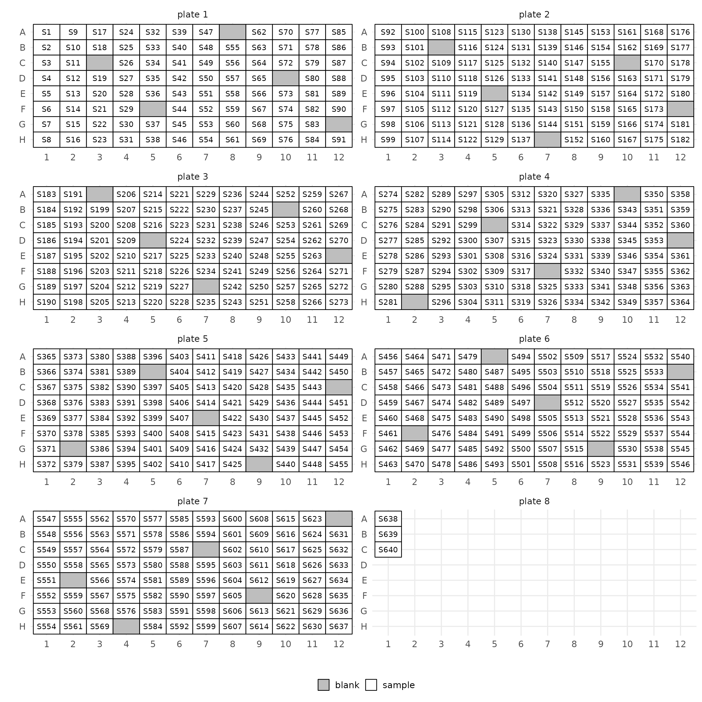
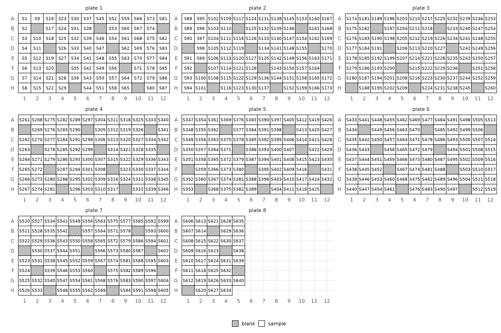
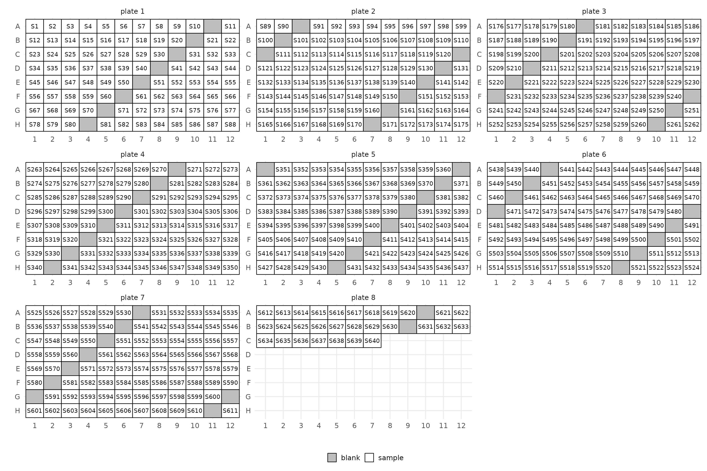

Before even having sequencing data you will have to extract DNA or
RNA from possibly many samples. This is often done on 96-well plates
which requires designing layouts for many plates. miso
provides a few helpers for that.
The only thing you will need is yet again a sample manifest. This will need to have an id column again. Let’s make one for a somewhat larger experiment.
## Also loading:## - dada2=1.28.0
## - data.table=1.15.2
## - ggplot2=3.5.0
## - magrittr=2.0.3
## - phyloseq=1.44.0
## - ShortRead=1.58.0
## - yaml=2.3.8## Found tools:## - minimap2=2.27-r1193
## - samtools=1.19.2##
## Attaching package: 'miso'## The following object is masked _by_ 'package:BiocGenerics':
##
## normalize## The following object is masked from 'package:graphics':
##
## layout
manifest <- data.table(
id = paste0("S", 1:640),
age = runif(640, 18, 97) %>% ceiling(),
treatment = c("control", "inulin")[(runif(640) > 0.5) + 1],
sex = c("F", "M")[(runif(640) > 0.5) + 1]
)
head(manifest)## id age treatment sex
## <char> <num> <char> <char>
## 1: S1 25 inulin M
## 2: S2 84 inulin F
## 3: S3 66 inulin F
## 4: S4 31 control M
## 5: S5 19 inulin M
## 6: S6 55 inulin MYou can now get plate layouts by using layout.
lo <- layout(manifest)This will annotate your manifest with wells and also add in blanks (those have empty IDs):
lo$manifestThis will create a plate map as well. You can control the number of
columns with the ncol argument.
layout(manifest, ncol = 2)$layout
You can control the frequency of blanks with the
blank_step argument. Set it to Inf or
NA to get no blanks.
layout(manifest, blank_step = 9, ncol = 3)$layout
Depending on how you like to arrange your samples you could also do so by row. You can also specifically mark all empty wells as blanks. Helpful if you have pre-specified wells in the manifest.
layout(manifest, blank_step = 10, by = "row", ncol = 3)$layout
Finally you can also just plot existing layouts. For this just specify the well and plate in the manifest.